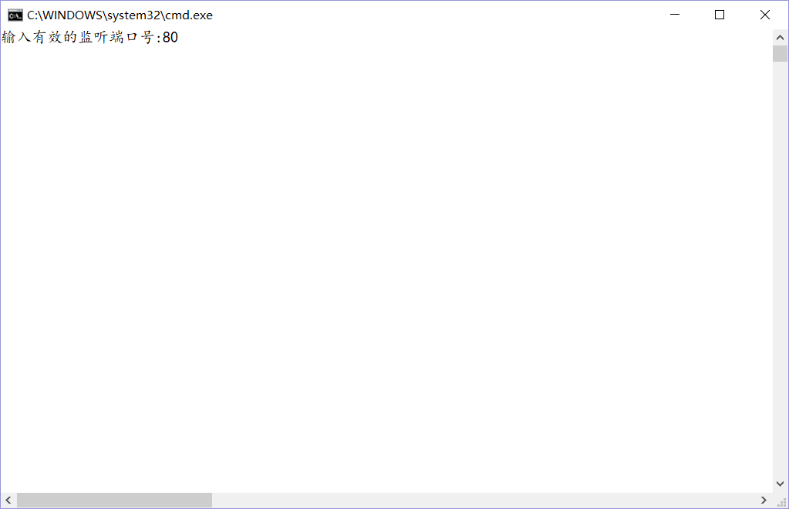
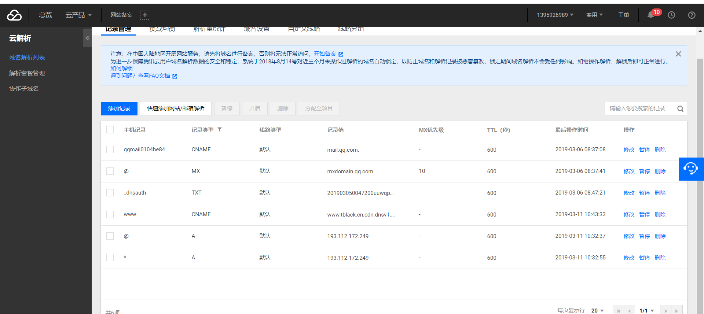

自建服务器搭建你的网站
这篇教程主要是告诉大家如何利用TCP和HTTP协议来完成网站的搭建。 首先你需要有C/C++语言基础，且有服务器、客户端概念，如果你了解TCP或者HTTP协议的话，那么将会帮助你更快的学会如何搭建个人网站。 该服务器使用的Windows中的IOCP模式来进行，我将put代码中最为重要的几个部分，如果你想要完整的代码。请email我(mail@tblack.cn)
- 准备好HTML文件，也就是你所要发布的网页，可以是静态网页也可以是动态网页,为了更好的帮助大家入门，我准备了一个最为简便的html代码如下
- 开始正式的编程。 我假设你有TCP/IP协议的相关知识，故不做太多介绍。
-
首先我们配置开发环境，如果你使用的VS的话，那么首先你需要几步来完成网络通信的环境搭建
- 创建项目并打开项目属性。转到 链接器中的输入选项之中：在附加依赖项之中添加 ws2_32.lib; 该库为网络通信库
-
引入头文件
#include<WinSock2.h> 和 #include<Windows.h>。 -
注意
：<Windows.h>必须在<WinSock2.h>之后。 否则会出现重定义错误。
- 创建套接字过程代码
#include<WinSock2.h> #include<Windows.h> int main(){ WSADATA wsaData; //在Windows之中创建套接字需要使用到的对象 HANDLE hComPort; //完成端口CP对象 SYSTEM_INFO sysInfo; //获取系统信息 WSAEVENT wEvent; //重叠事件 /// 关于客户端的信息与io相关的信息一定要是动态分配的。 ///否则在传递给其他线程的时候将会引用原本的地址且无法重新分配新的客户端与io数据 LPCLNTINFO pClntInfo; //保存客户端信息 LP_IO_DATA pIoData; //保存着io相关的数据 SOCKET servSock, clntSock; //服务器与客户端套接字 SOCKADDR_IN servAddr, clntAddr; //服务器与客户端地址 int clntAddrSz; //客户端地址长度 DWORD recvBytes = 0,flag = 0; //接收的数据大小和标志 int port = 0; //端口号 //这是一个处理输入的函数，我们将会在之后讲到。 getPortNumber(port); //处理输入数据并获取端口号。 if (WSAStartup(MAKEWORD(2, 2), &wsaData) != NULL) ErrorMsg("WSAStartup() error"); ///创建完后端口号。 hComPort = CreateIoCompletionPort(INVALID_HANDLE_VALUE, NULL, 0, 0); GetSystemInfo(&sysInfo); //获取系统信息 ///创建多个线程来分离IO处理 for (int i = 0; i < sysInfo.dwNumberOfProcessors; ++i) _beginthreadex(NULL, 0, ClntHandle, (LPVOID)hComPort, 0, NULL); //开始线程处理。 ///创建互斥量对象来防止线程访问共享内存时产生的临界区问题。 servSock = WSASocket(PF_INET, SOCK_STREAM, 0, NULL, 0, WSA_FLAG_OVERLAPPED); //创建重叠套接字 ///错误处理 if (servSock == INVALID_SOCKET) ErrorMsg("WSASocket() Error"); ///初始化IP地址和端口号。 memset(&servAddr, 0, sizeof(servAddr)); servAddr.sin_family = AF_INET; //IPV4协议 servAddr.sin_port = htons(port); //小端序转位网路大端序 servAddr.sin_addr.s_addr = htonl(INADDR_ANY); //自动获取本地IP地址 ///绑定服务器地址信息 if (bind(servSock, (SOCKADDR*)&servAddr, sizeof(servAddr)) == SOCKET_ERROR) ErrorMsg("bind() error"); ///监听来自客户端的连接请求。 500表示最大接代500个客户端同时请求。 if (listen(servSock, 500) == SOCKET_ERROR) ErrorMsg("listen() error"); clntAddrSz = sizeof(clntAddr); //获取客户端地址结构的大小 std::cout << std::left; //设置左对齐 ////处理来自客户端的连接请求 while (1) { clntSock = accept(servSock, (SOCKADDR*)&clntAddr, &clntAddrSz); wEvent = WSACreateEvent(); //存放事件句柄 if (clntSock == INVALID_SOCKET) //处理连接请求出错 { ErrorMsg("accept() error"); } ///动态分配内存处理客户端的连接 pClntInfo = (LPCLNTINFO)malloc(sizeof(CLNTINFO)); pClntInfo->hClntSock = clntSock; memcpy(&(pClntInfo->hClntAddr), &clntAddr, clntAddrSz); //复制客户端套接字的地址信息 /// 建立套接字到完后端口的连接 CreateIoCompletionPort((HANDLE)clntSock, hComPort, (DWORD)pClntInfo, 0); //传递的四clntInfo整个结构的地址。之后可以提取出来。 /// 动态分配保存着数据传输信息的IO对象 pIoData = (LP_IO_DATA)malloc(sizeof(IO_DATA)); memset(&(pIoData->overlapped), 0, sizeof(OVERLAPPED)); pIoData->wsaBuf.buf = pIoData->buf; pIoData->wsaBuf.len = BUF_SIZE; ///接收客户端信息 //当客户端未向服务器发送数据的时候，此时可以判定，客户端需要请求服务器的数据 if (WSARecv(clntSock, &(pIoData->wsaBuf), 1, (LPDWORD)&recvBytes, (LPDWORD)&flag, &(pIoData->overlapped), NULL) == SOCKET_ERROR) //注意此处传递的是ioData的整个结构地址 { // if (WSAGetLastError() == WSA_IO_PENDING) //数据仍在接收中 // { // std::cout << "数据仍在接收中..." << std::endl; // } } } closesocket(servSock); WSACleanup(); return 0; }
/// 利用了结构指针的地址就是结构首成员地址该点来传递IO端口完成信息
typedef struct
{
SOCKET hClntSock; //客户端套接字
SOCKADDR_IN hClntAddr; //客户端IP地址
}CLNTINFO, *LPCLNTINFO; //保存着客户端套接字属性
typedef struct
{
OVERLAPPED overlapped; //重叠属性结构
WSABUF wsaBuf; //存放缓冲数据的结构 主要存放了 待传输数据的大小和缓冲地址值
char buf[BUF_SIZE]; //存放数据的缓冲区
}IO_DATA, *LP_IO_DATA; //保存着IO相关的数据
void getPortNumber(int & port)
{
///输入端口号进行监听
std::cout << "输入有效的监听端口号:";
///确保输入了有效的换行符
while (!(std::cin >> port))
{
std::cin.clear(); //将cin中的错误位置位
std::cin.ignore(224, '\n'); //输入有误时忽略输入流中的缓冲信息.忽略最多224个字符，直到遇到了换行符为止
std::cout << "输入的端口号有误，重新输入:";
}
}
/// 建立套接字到完后端口的连接 CreateIoCompletionPort((HANDLE)clntSock, hComPort, (DWORD)pClntInfo, 0);
该函数是一个关键点，主要是将连接进入的客户端与我们的输入输出完成端口进行绑定。 之后该套接字存在事件时，将会转到我们的线程处理函数之中。
WSARecv(clntSock, &(pIoData->wsaBuf), 1, (LPDWORD)&recvBytes, (LPDWORD)&flag, &(pIoData->overlapped), NULL);
unsigned WINAPI ClntHandle(LPVOID cp)
{
DWORD recvBytes = 0, flag = 0;
LP_IO_DATA pIoData; //保存着IO对象的数据。 调用WSARecv传递的overlapped结构
LPCLNTINFO pClntInfo; //保存客户端的相关信息。调用CreateIoCompletionPort传递的第三个参数
SOCKET sock; //主要指的是客户端的套接字
HANDLE hComPort = (HANDLE)cp; //CP对象
while (1)
{
///确定IO完成状态
if (!GetQueuedCompletionStatus(hComPort, (LPDWORD)&recvBytes, (LPDWORD)&pClntInfo, (LPOVERLAPPED*)&pIoData, INFINITE))
{
///在客户端请求数据的过程中如果退出了请求，那么此时该函数则会出现错误，那么我们需要从错误中恢复过来
std::cout << GetLastError() << std::endl;
closesocket(pClntInfo->hClntSock); //关闭该套接字。
FreeData(&pIoData, &pClntInfo); //释放动态分配的内存。
continue;
}
///插入连接的客户端 IP地址信息
connectCnt[inet_ntoa(pClntInfo->hClntAddr.sin_addr)]++;
sock = pClntInfo->hClntSock;
pIoData->wsaBuf.buf[recvBytes] = 0;
if (recvBytes == 0) //接收数据为0的时候，此时没有接收到数据
{
closesocket(sock);
FreeData(&pIoData, &pClntInfo);
continue;
}
// std::cout << "开始接收客户端信息:" << pIoData->wsaBuf.buf << std::endl;
std::string fileName; //文件名
std::string compleHead(pIoData->wsaBuf.buf, 100);//部分头信息。最多获取100个字符
char cntType[SMALL_SIZE];
int mFind = compleHead.find('/'); //查找请求方式
int fFind = compleHead.find("HTTP/"); //查找文件名
///1. 当非GET请求，不理会。 2.当非HTTP/发出的请求不理会 3.当请求格式错误，不理会
if (mFind == std::string::npos || fFind == std::string::npos
|| std::string(compleHead, 0, mFind - 1) != "GET") //请求方式错误
{
closesocket(sock);
ExcptionRequst(&(pClntInfo->hClntAddr), pIoData->wsaBuf.buf); //发生异常连接 写入文件日志中
FreeData(&pIoData, &pClntInfo);
continue;
}
///获取完整文件名 在推断了多种可能的情况下，此种情况下获取文件名应该是安全的
fileName = std::string(compleHead.cbegin() + mFind + 1, compleHead.cbegin() + fFind - 1);
if (fileName.empty()) //当文件名为空，表示请求的是首页
{
fileName = "index.html";
strcpy_s(cntType, "text/html");
}
else
{
char * cs = GetContentType(fileName);
if (!cs) //返回的指针为空的时候表示文件不存在后缀
{
ErrorFile(sock);
FreeData(&pIoData, &pClntInfo);
continue;
}
strcpy_s(cntType, cs); //复制请求文件类型
}
///给客户端发送数据
SendDataFile(sock, fileName.c_str(), cntType, pIoData);
///释放内存
closesocket(sock);
FreeData(&pIoData, &pClntInfo);
// std::cout << "网页数据发送完成..." << std::endl;
}
return 0;
}
int SendDataFile(SOCKET sock, const char * fileName, const char *contType, LP_IO_DATA &pIoData)
{
std::ifstream inFile(fileName, std::fstream::binary); //以读的方式打开文件
if (!inFile) //请求的文件不存在时
{
ErrorFile(sock);
return -1;
}
///传输回应头信息
//\r是回车(Carriage return) \n是换行 (New line)
char protocol[] = "HTTP/1.1 200 OK\r\n"; //状态
char servName[] = "Server: TD Web server\r\n"; //服务器名字
char cntEncode[] = "Content-Encoding: gzip\r\n"; //压缩方式
char transEncode[] = "Transfer-Encoding: chunked\r\n"; //传输编码
char vary[] = "Vary: Accept-Encoding\r\n"; //接受编码
char cntType[SMALL_SIZE]; //接收类型
char buf[BUF_SIZE]; //数据
char end[] = "\r\n"; //结束符
char cntLen[SMALL_SIZE];//内容长度
WSABUF wsaBuf; //存放数据缓冲
DWORD sendBytes = 0;
//WSAEVENT wsaEvent = WSACreateEvent();
sprintf_s(cntType, "Content-type:%s\r\n", contType);
///向客户端发送回应头信息
send(sock, protocol, strlen(protocol), 0); //传递状态行
send(sock, servName, strlen(servName), 0); //传递消息头的服务端名
send(sock, cntType, strlen(cntType), 0); //传递content-type
/// 获取文件长度. 当第一次发送一个文件的时候，计算出该文件的大小值，之后每次只需要提取该文件对应的大小即可。
if (fileSize.find(fileName) == fileSize.cend())
{
fileSize[fileName] = MyGetFileSize(fileName);
}
LARGE_INTEGER size = fileSize[fileName];
///向客户端发送文件大小长度
sprintf_s(cntLen, "Content-length:%lld\r\n", size.QuadPart);
send(sock, cntLen, strlen(cntLen), 0);
send(sock, end, strlen(end), 0);
wsaBuf.buf = buf;
wsaBuf.len = BUF_SIZE;
///读取请求文件的数据并传递给客户端
do
{
inFile.read(wsaBuf.buf, BUF_SIZE - 1);
int cnt = inFile.gcount();
wsaBuf.buf[cnt] = 0;
send(sock, buf, cnt, 0);
} while (!inFile.eof());
inFile.close(); //关闭文件
return 0;
}
该函数非常重要，注意观察该函数中的回应头信息，头信息必须按照HTTP协议的固定格式进行发送。
ARGE_INTEGER MyGetFileSize(const char * fileName)
{
///创建文件句柄并依此来获取到文件的大小信息。 对于操作系统来讲，每次创建句柄和调用系统函数将会存在额外的开销，绝对会影响性能
HANDLE hFile = CreateFileA(fileName, GENERIC_READ, FILE_SHARE_READ, NULL, OPEN_EXISTING, FILE_ATTRIBUTE_NORMAL, NULL);
LARGE_INTEGER size;
::GetFileSizeEx(hFile, &size); //获取文件大小
return size;
}
char * GetContentType(const std::string& fileName)
{
///通过string的反向查找函数首先查找.符号
size_t index = fileName.find_last_of('.');
if (index == std::string::npos || index == fileName.size()) //请求的文件无后缀名的话 返回一个空指针
return nullptr;
std::string s(fileName, index + 1);//如果存在后缀的话，那么则检查后缀
///通过后缀名来进行判断请求数据的类型
std::string type = dataType[s];
if (type.empty())
return "text/plain"; //如果在关联容器中没有找到相对应的类型
///返回转换为char*的类型
static char str[20];
strcpy_s(str, type.c_str());
return str;
}
当然其中也牵扯到其他的结构。这里并不一一举例，如果需要请发邮件给我。
当你完成基本的结构的时候，则可以测试你的程序。 服务器输入 80 端口进行监听。 此时打开浏览器。输入 localhost并回车
---
此时你的控制台将会打印出连接的客户信息。当然这是在你实现了该项功能之后。 但是最起码你在浏览器中看到你的网页了。
如果你希望能够让其他人也能够看到你网页，你可以尝试如下方法：
- 购买服务器并将程序和html文件放在服务器端执行，其他用户通过你的服务器外网IP地址进行访问。
- 使用特定的软件进行内网穿透，将内网穿透为公网并设置端口号，其他用户通过你提供的公网IP和端口号进行连接。 你可以百度“免费frp”来找到心仪的软件，如 Sakura frp
如果你不想编写自己的服务器代码，而只想要put自己的网站让其他人访问，你可以使用如下软件：
- Windows提供的 IIS
- 云盾
- … 你可以百度搜索网站托管
之后如果你想要其他人通过 域名来访问你的网站。 如 www.baidu.com就是一个域名。你就需要去购买域名，购买域名流程你可以百度。
之后再域名认证备案一系列流程。 备案完成之后将域名与你的服务器公网IP地址进行绑定。如果想要网站响应速度变得更快，那么你可以再设置cdn缓存，同样该步骤可以通过百度查询得到。
如果你域名备案成功，那么则需要进行解析。这里给出我的域名解析方案。具体你可以百度得到更详细的步骤。

----
当你完成这些之后，那么恭喜你，你的网站应该可以正常被访问了！ 那么丰富你的网站让更多人看到吧！